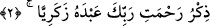
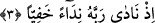

başka görüşe göre ise bu harfler birinci kısma girer.
3. Allâh’ın Kitabı’na yerleştirdiği açık ve gizli mânâlar olup Peygamberi’ne öğrettiği
ve O’nun da öğretmesini emrettiği ilimdir.”
2. (Bu,) Rabbi’nin, Zekeriyya kuluna rahmetinin anılmasıdır.
Yani bu okunan “Rabbinin, Zekeriyyâ kuluna rahmetinin anılmasıdır.” “Zekeriyya”
kelimesi, hem uzatarak hem de uzatmadan okunabilir. O, Âzer oğlu Zekeriyya’dır.
Kâşifî şöyle der: “Dâvud oğlu Süleymân (a.s.) oğlu Rac’îm’in oğullarından olan
Zekeriyya (a.s.) yüce bir peygamberdi. Beytü’l-makdis ulemâsının ulusu ve kurban
işleri sorumlusu idi.
Fahreddîn Râzî, Zekeriyyâ (a.s.)’ın Hz. Mûsâ’nın kardeşi Hz. Harun’un oğlu
olduğunu söylemiştir. Onlar da Yakub b. İshak b. Lavi’nin oğullarındandır.
3. Hani o, gizli bir sesle Rabbine niyaz etmişti:
“Hani o, gizli bir sesle Rabbine niyaz etmişti:” Bu âyet, yukarıdaki âyette geçen
“Rabbi’nin rahmeti” ifâdesinin zarfıdır. Yâni, Zekeriyya (a.s.) kurban sunduktan sonra
Rabb’ine Beytü’l-makdis mihrabında nidâ eyledi, gizlice yalvardı.
Zekeriyya (a.s.) duâsında güzel edebe riâyet etmiştir. Çünkü gizli duâ, Allah Teâlâ’ya
göre açık bir şey gibi olmakla birlikte ihlâsa daha yakın, riyâdan daha uzaktır ve
korktuğu yakınlarının şerrinden kurtulmak için daha uygundur. Çünkü o, gizli duâ edince
onlar bunun farkına varmadılar. Yine Allâh’a gizlice seslenince insanların kendisini,
çocuk istemesinden dolayı ayıplamalarından da kurtulmuş oldu. Çünkü o, yaşlılık
durumunda bir takım şeyleri yapmanın kendisine yakışmadığının farkındaydı. Kâşifî’nin
tercih ettiği görüşe göre Zekeriyya (a.s.) o zaman doksan dokuz yaşındaydı.
Eğer “Nidânın (seslenmenin) açıktan yapılması şarttır, nasıl olur da gizli yapılır?”
dersen, cevap olarak derim ki: O, namazda iken duâ etti ve bundan dolayı duâsını gizli
yaptı.
Fakir (Bursevî) ise şöyle der: Nidâ, her ne kadar ses anlamındaysa da ses bazen zayıf
olur. Nitekim “hems (gizli ses)” denilir. Nidâ da böyledir. Fakihlerden sahih bir şekilde
rivayet edildiğine göre gizli seslerden bir kısmı açığın en düşük derecelerinden sayılır.
Bu konunun geniş açıklaması Fenârî’nin Fâtiha Tefsiri’nde yer almaktadır.
Bu hususu mütâlaa ederken bana şöyle bir mânâ zâhir oldu: Havâssa göre gizli nidâ,
gizli zikir gibidir. Bu ise insanlar bir tarafa, hafaza (koruyucu) meleklerine bile gizli